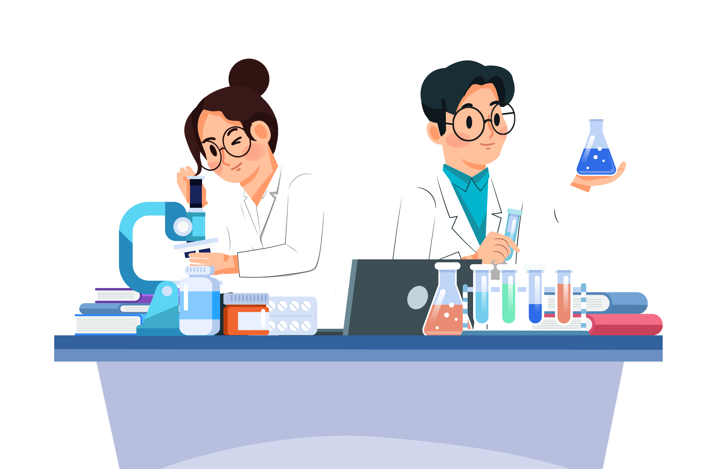

WELCOME TO OUR WEBSITE
ENSIT RESEARCH CENTER


At ENSIT Research Center, we are committed to advancing knowledge, driving innovation, and creating impactful solutions through rigorous research and interdisciplinary collaboration. Founded in 2010, our center serves as a hub for scientists, scholars, and industry experts dedicated to addressing some of the most pressing challenges of our time. Our mission is to foster cutting-edge research that contributes to both academic excellence and real-world impact. We work across diverse domains including environmental science, artificial intelligence, biomedical research, and social sciences, with the aim of generating insights that inform policy, improve lives, and shape the future. We support a dynamic research environment through state-of-the-art facilities, international partnerships, and a strong commitment to mentoring the next generation of researchers. At the heart of our work lies a belief in curiosity-driven exploration, ethical research practices, and collaboration without boundaries. Whether you are a researcher, student, policymaker, or industry partner, we invite you to engage with us and be part of a community dedicated to discovery and innovation.
Discover our innovative projects driving impact across various domains.
Join us for engaging events fostering collaboration and innovation.
A platform to showcase groundbreaking research, featuring keynote speeches and workshops.
Learn More
Meet the dedicated team behind our research excellence.

Lead Researcher in AI, with over 20 years of experience in machine learning and data science.
Learn More
Highlighting the scale and impact of our research projects.
Spanning AI, environmental science, and biomedical research, driving innovation across disciplines.
Our projects exceed industry standards, with 85% meeting objectives on time and within scope.
Grants and partnerships fueling cutting-edge research and real-world solutions.